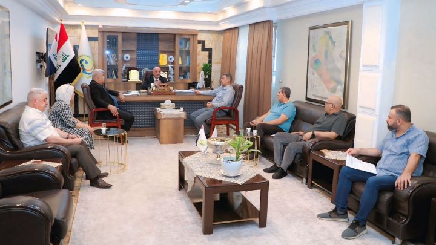

استنادًا للتوجيهات الوزارية وبالإيعاز من المدير العام للهيأة العامة للمياه الجوفية؛ حضر معاون المدير العام المهندس " عماد عباس بنيان "الندوة التثقيفية التي نظمها الفريق الوزاري للنزاهة ومكافحة الفس...
المزيد
استنادًا للتوجيهات الوزارية وبالإيعاز من المدير العام للهيأة العامة للمياه الجوفية؛ أعلنت لجنة رفع التجاوزات في فرع ديالى عن رفع (5) طواقم ضخ منصوبة على آبار مغذية لـ(5) بحيرات أسماك متجاوزة وقطع ا...
المزيد
بالإيعاز من المدير العام للهيأة العامة للمياه الجوفية الدكتور " ميثم علي خضير" شارك مدير فرع البصرة الدكتور " عمار عبدالخالق علي " في الندوة الموسعة التي أقامتها جامعة البصرة – كلية الزراعة بالتعا...
المزيد
استنادًا للتوجيهات الوزارية وبالإيعاز من المدير العام للهيأة العامة للمياه الجوفية الدكتور "ميثم علي خضير"؛ نظم قسم هندسة الحفر ورشة عمل بعنوان "الحفر الدوراني ومشاكل الحفر" في فرع واسط
ويحاضر في ا...
المزيد
استنادًا للتوجيهات الوزارية وبالإيعاز من المدير العام للهيأة العامة للمياه الجوفية وبإشراف إدارة فرع صلاح الدين أعلنت لجنة إزالة التجاوزات عن ردم (7) بحيرات أسماك متجاوزة وغلق (4) آبار مغذية لها ضم...
المزيد
استنادًا للتوجيهات الوزارية وبالإيعاز من المدير العام للهيأة العامة للمياه الجوفية الدكتور "ميثم علي خضير"؛ نظم قسم هندسة الحفر ورشة عمل بعنوان "الحفر الدوراني ومشاكل الحفر" في فرع ميسان.
ويحاضر في...
المزيد
استنادًا للتوجيهات الوزارية وبالإيعاز من المدير العام للهيأة العامة للمياه الجوفية؛ رصدت لجنة ازالة التجاوزات في فرع واسط حالة تجاوز واحدة على مواعيد تشغيل المضخات ضمن قاطع الكوت – أيسر نهر دجلة.
و...
المزيد

ترأس المدير العام للهيأة العامة للمياه الجوفية الدكتور اليوم الأحد 24 آب 2025 اجتماعًا ضم الملاك المتقدم في مكتبه بمقر الهيأة.
ويأتي هذا الاجتماع من أجل مناقشة مجموعة من الموضوعات التي تخص عمل اله...
المزيد
أقامت الهيأة العامة للمياه الجوفية دورة "سلامة اللغة العربية في المخاطبات الرسمية" في فرع ديالى بحضور مدير الفرع ومشاركة عدد من الموظفين.
وتأتي هذه الدورة استنادًا لتوجيهات المدير العام الهيأة العا...
المزيد


 2025-08-27
2025-08-27  12:40 PM
12:40 PM  39
39